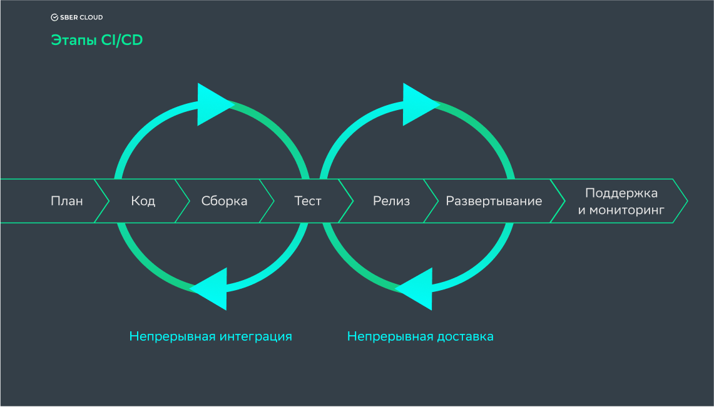

CI/CD

CI/CD на примере GithubActions
Github Actions для этого репозитория
name: Build
on: [push, pull_request, workflow_dispatch]
permissions:
contents: write
jobs:
docs:
runs-on: ubuntu-latest
if: ${{ github.event_name == 'push' && github.ref == 'refs/heads/main' }}
steps:
- uses: actions/checkout@v3
- uses: actions/setup-python@v3
- name: Install dependencies
run: |
pip install -r requirements.txt
- name: Update sphinx
run: |
pip install -U sphinx~=7.3.0
- name: Sphinx build
run: |
make html
- name: Deploy
uses: peaceiris/actions-gh-pages@v3
with:
publish_branch: gh-pages
github_token: ${{ secrets.GITHUB_TOKEN }}
publish_dir: build/html
force_orphan: true